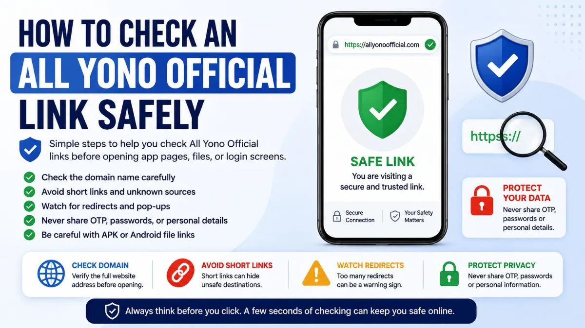

How to Check an All Yono Official Link Safely

Checking an All Yono Official link safely is one of the first things users should do before opening any app page, Android file, login screen, or shared link. Many users click quickly, especially when a link comes from search results, WhatsApp, Telegram, or social media. But a few seconds of checking can help avoid confusion, unsafe pages, and wrong redirects.
This article is written for new users who want simple safety steps. You do not need technical knowledge. You only need to know what to look at before continuing.
A safe browsing habit starts with one question: does this link clearly match what I expected to open?
Why Link Safety Matters
Many app-related searches have similar names, repeated words, and small spelling changes. Because of that, users may sometimes land on pages that look related but are not actually clear or trustworthy.
Some pages may copy names, use similar-looking titles, or place buttons that lead to unrelated pages. Others may open extra tabs or push users toward files without explaining what the file is.
This is why checking the link matters. It helps users understand whether they are on the right page before entering details, opening files, or clicking another button.
For a broader overview of the site and app-related information, you can also read our All Yono Official website information article.
Start With the Domain Name
The domain name is the first thing to check. Do not only look at the page title. Titles can be copied easily. The domain is more important because it shows where the page is actually hosted.
Look carefully at the full web address in your browser. Check for missing letters, extra words, unusual numbers, or confusing extensions. Sometimes a page may look similar at first glance, but one small change can make it a different website.
For example, users should be careful with links that contain long random text, too many hyphens, strange symbols, or unrelated words before or after the main name.
A clear domain should be easy to read and easy to recognize.
Avoid Rushing Through Short Links
Short links are common online. They are often used to make long links easier to share. But the problem is simple: a short link can hide the real destination.
If someone shares a short link through a group, message, or comment, do not rush to open it. If the sender is unknown, or if the message gives pressure to click quickly, be more careful.
A safe habit is to open only links that clearly show the domain. If the link hides the destination, pause first. Users should avoid opening shortened links that come with urgent messages, unclear descriptions, or repeated forwarding.
Watch for Too Many Redirects
A redirect happens when one link sends you to another page. Some redirects are normal. But too many redirects can be a warning sign.
If you click one All Yono Official link and it sends you through several pages before showing anything useful, be careful. A trusted information page should not make users feel lost.
Also watch if the page opens pop-ups, extra tabs, or unrelated sites. If the link keeps moving you from one page to another, close the tab and return to a clear source.
A simple user rule helps: if the page behavior feels confusing, do not continue.
Check the Page Content Before Clicking Buttons
After opening the page, read the content before clicking buttons. The page should explain what users are seeing. It should not only show a big button without context.
Check whether the page provides basic information, safety notes, access details, or clear instructions. If the page only gives pressure to click, open, install, or submit details, that is not a good sign.
A trustworthy app information page should help users understand first. It should not force immediate action.
Also be careful with buttons that use unclear wording. If you do not know where a button will take you, do not click it yet.
Be Careful With APK or Android File Links
Many users in India use Android phones, so APK-related searches are common. But APK files should always be handled carefully.
Before opening any Android file, check the page source, file name, and explanation. Do not install a file only because it appears under a familiar name. A file can use a familiar label while still coming from an unclear source.
Also check permissions. If an app asks for access to contacts, SMS, storage, camera, microphone, or notifications without a clear reason, pause first.
Android may allow a file to install, but that does not automatically mean the file is safe. Device permission and file trust are different things. For more detail, read our Android file and APK notes.
Never Share Private Details Too Early
A link becomes risky when it asks for private details before explaining why they are needed.
Users should not share OTPs, passwords, Aadhaar details, bank information, wallet details, private screenshots, personal IDs, or account records on unclear pages.
If a page asks for sensitive details immediately after opening, stop. If a link was shared through a random group and then asks for account information, stop again.
Private information should only be entered when the user clearly understands the page, the purpose, and the source.
Check Whether the Page Matches Your Search
If you found the link through search results, compare the page with what you searched.
For example, if you searched for All Yono Official information, the page should provide related information. If it suddenly shows unrelated topics, unrelated buttons, or confusing redirects, leave the page.
Search results can sometimes show pages that mention a term without being the right destination. That is why users should still check the page after opening it.
Do not assume that every search result is automatically safe or correct.
Safe Link Checklist
Use this checklist before opening app links, Android files, or login pages.
| What to Check | What It Means |
|---|---|
| Domain name | Check whether the website address looks clear and expected |
| Spelling | Look for missing letters, added words, or strange variations |
| Short links | Avoid links that hide the real destination |
| Redirects | Too many redirects can be a warning sign |
| Page content | The page should explain itself before asking for action |
| Buttons | Avoid unclear buttons that do not explain where they lead |
| APK files | Check source, file name, and permissions first |
| Private details | Do not share OTPs, passwords, IDs, or payment information |
| Pop-ups | Repeated pop-ups or forced tabs can be unsafe |
| Device behavior | If the phone reacts strangely, close the page |
This checklist is simple, but it can prevent many common mistakes.
Common Warning Signs
Some warning signs are easy to notice once users know what to look for.
Be careful if a page uses urgent wording, repeated pop-ups, spelling mistakes, unclear buttons, or too many redirects. Also be careful if the page asks for sensitive information before explaining anything.
Another warning sign is when a page looks unfinished or copied. If the layout feels broken, the text is confusing, or the page mixes unrelated topics, do not continue.
A safe page should feel clear. It should explain what it is, what users can check, and what steps are available without forcing them.
What to Do If a Link Looks Suspicious
If an All Yono Official link looks suspicious, the best move is simple: close it.
Do not test every button. Do not enter fake information. Do not download files just to check them. That can still expose your device to risk.
After closing the page, you can clear the browser tab, avoid returning through the same link, and use only the correct site path you already trust.
If you already entered sensitive details on a suspicious page, take action quickly. Change passwords where needed, avoid sharing OTPs, and review your account or device settings.
Link Safety Tips for Mobile Users
Mobile screens are smaller, so users may not always see the full link. This makes link checking more important.
Tap the address bar to see the full URL. Do not rely only on the page logo or title. Also avoid clicking links from floating pop-ups or banners that cover the page.
If you are using mobile data and the page loads strangely, wait before clicking. Slow loading can sometimes make users tap the wrong button.
Keep your browser updated, and avoid installing files while your phone storage or security settings are unclear. You can also explore more All Yono Official articles for additional safety notes.
FAQs About Checking All Yono Official Links
AllYonoOfficial.com does not run or own the apps listed here. The rummy app can be addictive and risky financially, so use them carefully. Only for 18+ people.
Please read our Disclaimer page and the specific disclaimer for each app.
Alert: Rummy, a skill-based game, is banned by the government in Andhra Pradesh, Sikkim, Nagaland, Assam, Arunachal Pradesh, Tamil Nadu, Odisha, and Telangana.